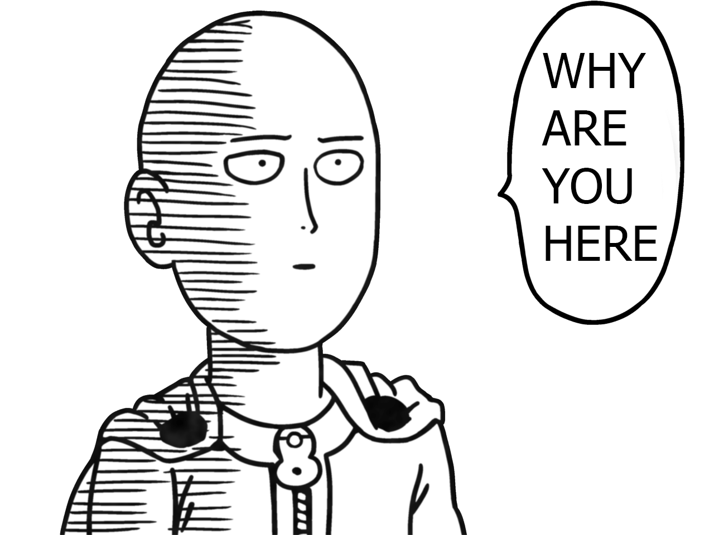

<div ng-include="'views/partials/nav.html'"></div>
<div layout="rows">
    <div layout="column">
        <!-- For when the user goes to this page without previously searching for a manga.  -->
        <div ng-if="!vm.mangaResults.list.data">
            
        </div>

        <!-- Card for each manga -->
        

        <div class="cardContainer" layout="row">
            <md-card class="cards" ng-repeat="manga in vm.mangaResults.list.data">
                
                <md-card-title>
                    <md-card-title-text>
                        <h3>{{manga.title}}</h3>
                        <h3>Chapters: {{manga.chapters}}</h3>
                    </md-card-title-text>
                    <md-card-icon-actions>
                        <md-button class="md-icon-button" aria-label="Favorite" ng-click="vm.addFavorite(manga)">
                            <md-icon md-svg-icon="../../styles/icons/favorite.svg"></md-icon>
                        </md-button>
                    </md-card-icon-actions>
                </md-card-title>
            </md-card>
        </div>
    </div>
    <div layout="column">
        <div ng-include="'views/partials/categories.html'"></div>
    </div>

</div>